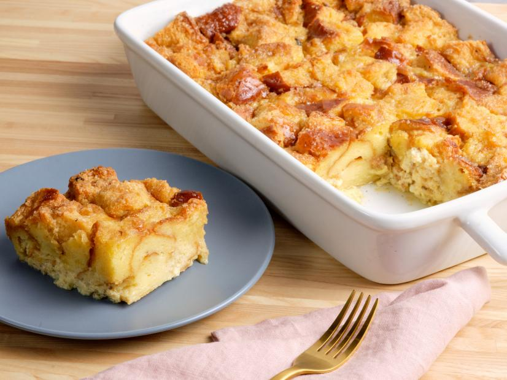

Bread Pudding

My family LOVES bread pudding, and this recipe is one that I have fine tuned
to their taste. I have to double this recipe, and bake it in a 9x13 inch pan
for my family! It's great for breakfast or dessert and is delicious with milk
poured on top! Enjoy!
Ingredients:
- 6 slices day-old bread
- 2 tablespoons butter, melted
- One half cup raisins (optional)
- 4 eggs, beaten
- 2 cups milk
- 3/4 cup white sugar
- One teaspoon brown sugar
- One teapsoon vanilla abstract
Directions:
- Preheat oven to 350 degrees F (175 degrees C).
- Break bread into small pieces into an 8 inch square baking pan. Drizzle
melted butter or margarine over bread. If desired, sprinkle with raisins.
- In a medium mixing bowl, combine eggs, milk, sugar, cinnamon, and vanilla.
Beat until well mixed. Pour over bread, and lightly push down with a fork until
bread is covered and soaking up the egg mixture.
- Bake in the preheated oven for 45 minutes,
or until the top springs back when lightly tapped.
Nutritional Facts:
- Per Serving:
165 calories; protein 4.6g; carbohydrates 26.5g; fat 4.8g; cholesterol 70.3mg; sodium 139.6mg.